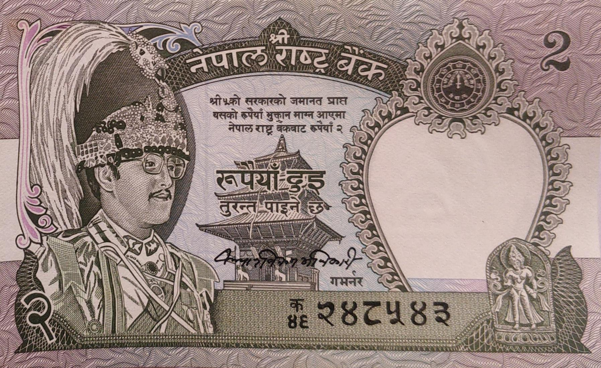
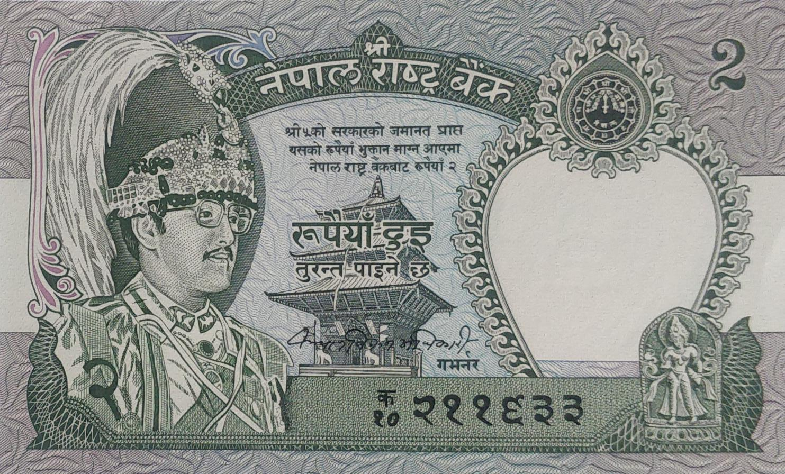
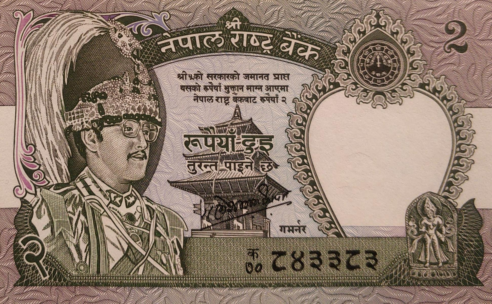
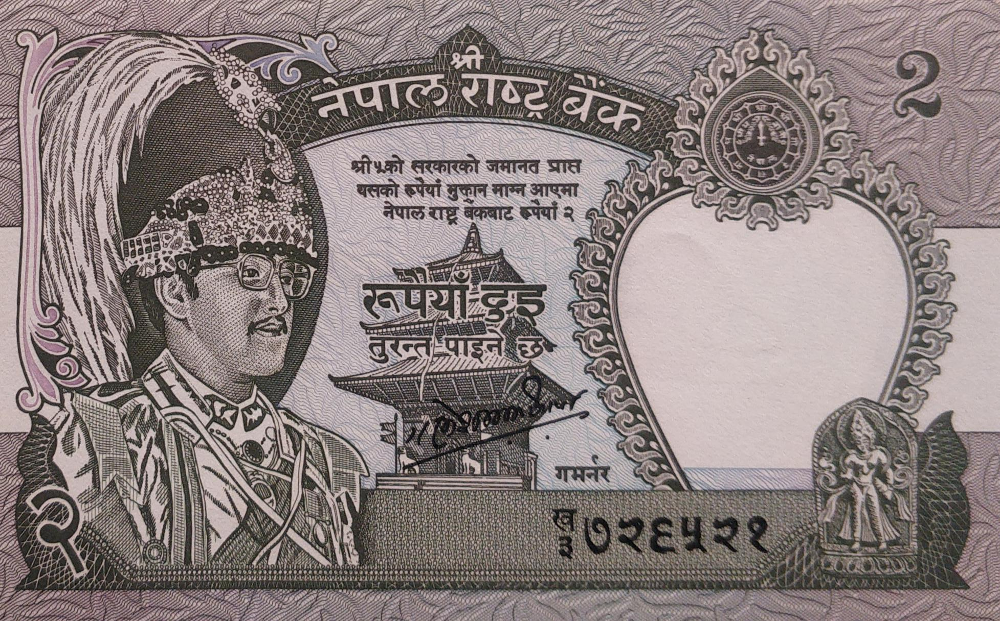
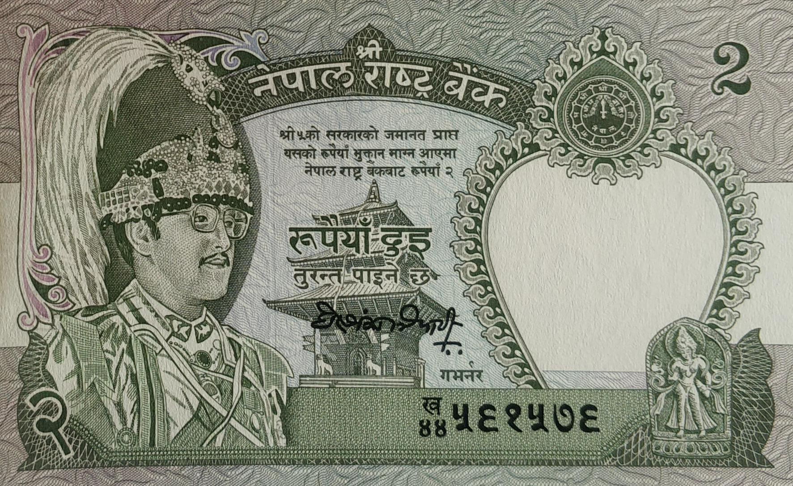
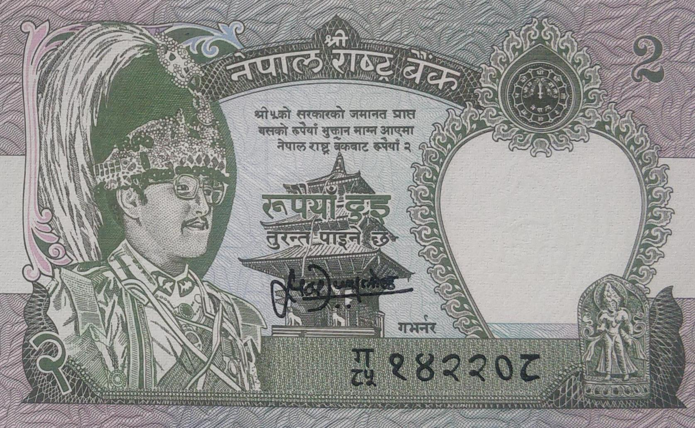
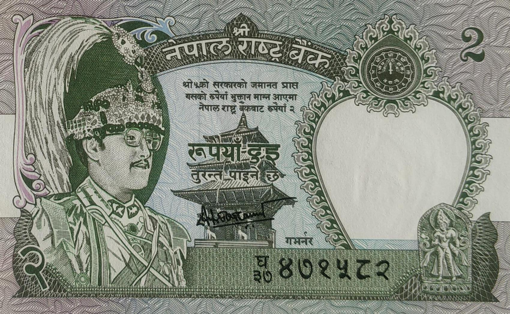
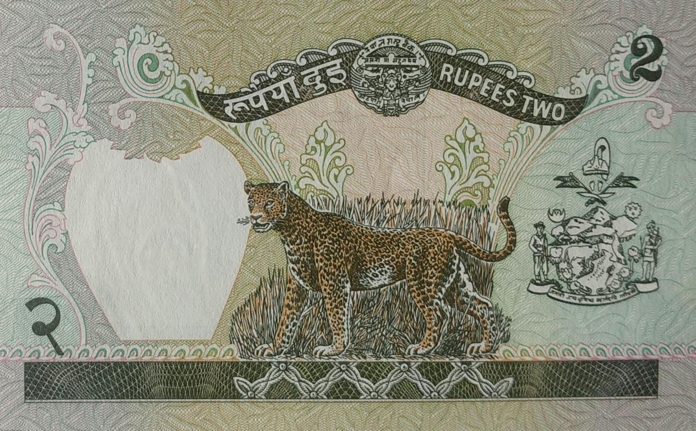

Kalyana Bikram Adhikari (June 13, 1979 to December 08, 1984)


Ganesh Bahadur Thapa (March 25, 1985 to May 25, 1990)

Hari Shankar Tripathi (August 10, 1990 to Jan 17, 1995)

Satyendra Pyara Shrestha (Jan 18, 1995 to Jan 17, 2000)


Dipendra Purush Dhakal (August 29, 2000 to April 27, 2000)
Facts:
- Domination: Rupees 2
- Signature:
7-Kalyana Bikram Adhikari
8-Ganesh Bahadur Thapa
9-Hari Shankar Tripathi
10-Satyendra Pyara Shrestha
11-Dipendra Purush Dhakal
- Issued date: Between 1983 to 2001
- Front: Portrait of King Birendra & Bajrayogini Temple
- Back: Spotted Leopard
- Watermark: Plumed crown
- Size: 70 x 114mm